농산물품질관리사-1차 (2022-04-02 기출문제)
1과목: 관계 법령
1. 농수산물 품질관리법령상 동음이의어 지리적표시에 관한 정의이다. ( )에 들어갈 내용으로 옳은 것은?
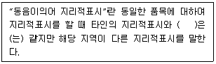
- 발음
- 유래
- 명성
- 품질
(정답률: 70%)

2. 농수산물 품질관리법령상 농수산물품질관리심의회의에서 심의하는 사항이 아닌 것은?
- 농산물 품질인증에 관한 사항
- 농산물 이력추적관리에 관한 사항
- 유전자변형농산물의 표시에 관한 사항
- 농산물 표준규격 및 물류표준화에 관한 사항
(정답률: 19%)
3. 농수산물 품질관리법령상 2022년 4월 1일 검사한 보리쌀의 농산물검사의 유효기간은?
- 40일
- 60일
- 90일
- 120일
(정답률: 알수없음)
4. 농수산물 품질관리법령상 다른 사람에게 농산물품질관리사 자격증을 빌려 주어 자격이 취소된 사람은 그 처분이 있은 날부터 농산물품질관리사 자격시험에 응시할 수 없는 기간은?
- 1년
- 2년
- 3년
- 5년
(정답률: 알수없음)
5. 농수산물 품질관리법령상 우수관리시설의 지위를 승계한 경우 종전의 우수관리시설에 행한 행정제재처분의 효과는 그 지위를 승계한 자에게 승계된다. 처분사실을 인지한 승계자에게 그 처분이 있은 날부터 행정제재처분의 효과가 승계되는 기간은?
- 6개월
- 1년
- 2년
- 3년
(정답률: 60%)
6. 농수산물 품질관리법령상 우수관리인증농산물 표시의 제도법에 관한 설명으로 옳지 않은 것은?
- 인증번호는 표지도형 밑에 표시한다.
- 표지도형의 영문 글자는 고딕체로 한다.
- 표지도형 상단의 농림축산식품부와 MAFRA KOREA의 글자는 흰색으로 한다.
- 표지도형의 색상은 녹색을 기본색상으로 하고, 포장재의 색깔 등을 고려하여 빨간색으로 할 수 있다.
(정답률: 알수없음)
7. 농수산물 품질관리법령상 농산물의 이력추적관리 등록에 관한 설명으로 옳지 않은 것은?
- 농림축산식품부장관은 이력추적관리의 등록을 한 자에 대하여 이력추적관리에 필요한 비용의 일부를 지원할 수 있다.
- 농림축산식품부장관은 이력추적관리의 등록자로부터 등록사항의 변경신고를 받은 날부터 1개월 이내에 신고수리 여부를 신고인에게 통지하여야 한다.
- 대통령령으로 정하는 농산물을 생산하거나 유통 또는 판매하는 자는 농림축산식품부장관에게 이력추적관리의 등록을 하여야 한다.
- 이력추적관리의 등록을 한 자는 등록사항이 변경된 경우 변경 사유가 발생한 날부터 1개월 이내에 농림축산식품부장관에게 신고하여야 한다.
(정답률: 0%)
8. 농수산물 품질관리법령상 지리적표시 농산물의 특허법 준용에 관한 설명으로 옳지 않은 것은?
- 출원은 등록신청으로 본다.
- 특허권은 지리적표시권으로 본다.
- 심판장은 농림축산식품부장관으로 본다.
- 산업통상자원부령은 농림축산식품부령으로 본다.
(정답률: 0%)
9. 농수산물 품질관리법령상 지리적표시품의 1차 위반행위에 따른 행정처분 기준이 가장 경미한 것은?
- 지리적표시품이 등록기준에 미치지 못하게 된 경우
- 등록된 지리적표시품이 아닌 제품에 지리적표시를 한 경우
- 지리적표시품 생산계획의 이행이 곤란하다고 인정되는 경우
- 지리적표시품에 정하는 바에 따른 지리적표시를 위반하여 내용물과 다르게 거짓표시를 한 경우
(정답률: 10%)
10. 농수산물 품질관리법령상 안전성조사 업무의 일부와 시험분석 업무를 수행하기 위하여 안전성검사기관을 지정하고 안전성조사와 시험분석 업무를 대행하게 할 수 있는 권한을 가진 자는?
- 식품의약품안전처장
- 국립농산물품질관리원장
- 농림축산식품부장관
- 농촌진흥청장
(정답률: 46%)
11. 농수산물 품질관리법령상 안전성검사기관에 대해 6개월 이내의 기간을 정하여 업무의 정지를 명할 수 있는 경우는? (단, 경감사유는 고려하지 않음)
- 검사성적서를 거짓으로 내준 경우
- 거짓된 방법으로 안전성검사기관 지정을 받은 경우
- 부정한 방법으로 안전성검사기관 지정을 받은 경우
- 업무의 정지명령을 위반하여 계속 안전성조사 및 시험분석 업무를 한 경우
(정답률: 0%)
12. 농수산물 품질관리법령상 유전자변형농산물의 표시기준 및 표시방법이 아닌 것은?
- '유전자변형농산물임'을 표시
- '유전자변형농산물이 포함되어 있음'을 표시
- '유전자변형농산물이 포함되어 있지 않음'을 표시
- '유전자변형농산물이 포함되어 있을 가능성이 있음'을 표시
(정답률: 알수없음)
13. 농수산물 품질관리법령상 위반에 따른 벌칙의 기준이 다른 것은?
- 우수관리인증농산물이 우수관리기준에 미치지 못하여 우수관리인증농산물의 유통업자에게 판매금지 조치를 명하였으나 판매금지 조치에 따르지 아니한 자
- 유전자변형농산물의 표시를 거짓으로 한 자에게 해당 처분을 받았다는 사실을 공표할 것을 명하였으나 공표명령을 이행하지 아니한 자
- 안전성조사를 한 결과 농산물의 생산단계 안전기준을 위반하여 출하 연기 조치를 명하였으나 조치를 이행하지 아니한 자
- 지리적표시품의 표시방법을 위반하여 표시방법에 대한 시정명령을 받았으나 시정명령에 따르지 아니한 자
(정답률: 알수없음)
14. 농수산물의 원산지 표시 등에 관한 법령상 프랑스에서 수입하여 국내에서 35일간 사육한 닭을 국내 일반음식점에서 삼계탕으로 조리하여 판매할 경우 원산지표시방법으로 옳은 것은?
- 삼계탕(닭고기: 국내산)
- 삼계탕(닭고기: 프랑스산)
- 삼계탕(닭고기: 국내산(출생국: 프랑스))
- 삼계탕(닭고기: 국내산과 프랑스산 혼합)
(정답률: 30%)
15. 농수산물의 원산지 표시 등에 관한 법령상 위반행위에 관한 내용이다. ( )에 해당하는 과태료 부과기준은?
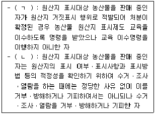
- ㄱ: 500만원 이하, ㄴ: 500만원 이하
- ㄱ: 500만원 이하, ㄴ: 1,000만원 이하
- ㄱ: 1,000만원 이하, ㄴ: 500만원 이하
- ㄱ: 1,000만원 이하, ㄴ: 1,000만원 이하
(정답률: 30%)
16. 농수산물의 원산지 표시 등에 관한 법령상 A씨가 판매가 35,000원 상당의 고사리에 원산지를 표시하지 않아 원산지 표시의무를 위반한 경우 부과되는 과태료는? (단, 감경사유는 고려하지 않음)
- 30,000원
- 35,000원
- 40,000원
- 50,000원
(정답률: 30%)
17. 농수산물 유통 및 가격안정에 관한 법령상 중앙도매시장은?
- 서울특별시 강서 농산물도매시장
- 부산광역시 반여 농산물도매시장
- 광주광역시 서부 농수산물도매시장
- 인천광역시 삼산 농산물도매시장
(정답률: 알수없음)
18. 농수산물 유통 및 가격안정에 관한 법령상 가격 예시에 관한 설명으로 옳지 않은 것은?
- 농림축산식품부장관이 예시가격을 결정할 때에는 미리 기획재정부장관과 협의하여야 한다.
- 농림축산식품부장관은 해당 농산물의 파종기 이후에 하한가격을 예시하여야 한다.
- 가격예시 대상 품목은 계약생산 또는 계약출하를 하는 농산물로서 농림축산식품부장관이 지정하는 품목으로 한다.
- 농림축산식품부장관은 농림업관측 등 예시가격을 지지하기 위한 시책을 추진하여야 한다.
(정답률: 47%)
19. 농수산물 유통 및 가격안정에 관한 법령상 농림축산식품부장관이 필요하다고 인정할 때에 생산자단체를 지정하여 수입ㆍ판매하게 할 수 있는 품목은?
- 오렌지
- 고추
- 마늘
- 생강
(정답률: 알수없음)
20. 농수산물 유통 및 가격안정에 관한 법령상 산지유통인의 등록에 관한 설명으로 옳지 않은 것은?
- 농수산물을 수집하여 도매시장에 출하하려는 자는 부류별로 도매시장 개설자에게 등록하여야 한다.
- 중도매인의 임직원은 해당 도매시장에서 산지유통인의 업무를 하여서는 아니 된다.
- 거래의 특례에 따라 시장도매인이 도매시장법인으로부터 매수하여 판매하는 경우 산지유통인 등록을 하여야 한다.
- 생산자단체가 구성원의 생산물을 출하하는 경우 산지유통인 등록을 하지 않아도 된다.
(정답률: 알수없음)
21. 농수산물 유통 및 가격안정에 관한 법령상 농산물가격안정기금에 관한 설명으로 옳지 않은 것은?
- 기금은 정부 출연금 등의 재원으로 조성한다.
- 기금은 농산물의 수출 촉진 사업에 융자 또는 대출할 수 있다.
- 기금은 도매시장 시설현대화 사업 지원 등을 위하여 지출한다.
- 기금은 국가회계원칙에 따라 기획재정부장관이 운용ㆍ관리한다.
(정답률: 20%)
22. 농수산물 유통 및 가격안정에 관한 법령상 농수산물 전자거래에 관한 설명으로 옳지 않은 것은?
- 농림축산식품부장관은 한국농수산식품유통공사에 농수산물 전자거래소의 설치 및 운영ㆍ관리업무를 수행하게 할 수 있다.
- 농수산물전자거래의 거래수수료는 거래액의 1천분의 30을 초과할 수 없다.
- 농수산물전자거래의 거래품목은 농림축산식품부령 또는 해양수산부령으로 정하는 농수산물이다.
- 농수산물전자거래분쟁조정위원회 위원의 임기는 2년으로 하며, 최대 연임가능 임기는 6년이다.
(정답률: 10%)
23. 농수산물 유통 및 가격안정에 관한 법령상 전년도 연간 거래액이 8억원인 시장도매인이 해당 도매시장의 중도매인에게 농산물을 판매하여 시장도매인 영업규정위반으로 2차 행정처분을 받은 경우 도매시장 개설자가 부과기준에 따라 시장도매인에게 부과하는 과징금은? (단, 과징금의 가감은 없음)
- 120,000원
- 180,000원
- 360,000원
- 540,000원
(정답률: 19%)
24. 농수산물 유통 및 가격안정에 관한 법령상 도매시장법인의 겸영에 관한 설명으로 옳지 않은 것은?
- 도매시장법인이 해당 도매시장 외의 군소재지에서 겸영사업을 하려는 경우에는 겸영사업 개시 전에 겸영사업의 내용 및 계획을 겸영하려는 사업장 소재지의 군수에게도 알려야 한다.
- 도매시장 개설자는 도매시장법인의 과도한 겸영사업이 우려되는 경우에는 농림축산식품부령이 정하는 바에 따라 겸영사업을 2년 이내의 범위에서 제한할 수 있다.
- 겸영사업을 하려는 도매시장법인의 유동비율은 100퍼센트 이상이어야 한다.
- 도매시장법인이 겸영사업으로 수출을 하는 경우 중도매인ㆍ매매참가인 외의 자에게 판매할 수 있다.
(정답률: 20%)
25. 농수산물 유통 및 가격안정에 관한 법령상 농수산물 공판장에 관한 설명으로 옳지 않은 것은?
- 공판장의 중도매인은 공판장의 개설자가 허가한다.
- 공판장 개설자가 업무규정을 변경한 경우에는 시ㆍ도지사에게 보고하여야 한다.
- 농림수협등이 공판장을 개설하려면 시ㆍ도지사의 승인을 받아야 한다.
- 도매시장공판장은 농림수협등의 유통자회사로 하여금 운영하게 할 수 있다.
(정답률: 40%)
2과목: 원예작물학
26. 원예작물별 주요 기능성 물질의 연결이 옳지 않은 것은?
- 상추 – 시니그린(sinigrin)
- 고추 – 캡사이신(capsaicin)
- 마늘 – 알리인(alliin)
- 포도 - 레스베라트롤(resveratrol)
(정답률: 28%)
27. 국내 육성 품종을 모두 고른 것은?
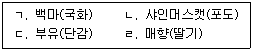
- ㄱ, ㄴ
- ㄱ, ㄹ
- ㄴ, ㄷ
- ㄷ, ㄹ
(정답률: 30%)
28. 과(科, family)명과 원예작물의 연결이 옳은 것은?
- 가지과 - 고추, 감자
- 국화과 - 당근, 미나리
- 생강과 - 양파, 마늘
- 장미과 - 석류, 무화과
(정답률: 20%)
29. 채소 수경재배에 관한 설명으로 옳지 않은 것은?
- 청정재배가 가능하다.
- 재배관리의 자동화와 생력화가 쉽다.
- 연작장해가 발생하기 쉽다.
- 생육이 빠르고 균일하다.
(정답률: 50%)
30. 채소의 육묘재배에 관한 설명으로 옳지 않은 것은?
- 조기 수확이 가능하다.
- 본밭의 토지이용률을 증가시킬 수 있다.
- 직파에 비해 발아율이 향상된다.
- 유묘기의 병해충 관리가 어렵다.
(정답률: 20%)
31. 양파의 인경비대를 촉진하는 재배환경 조건은?
- 저온, 다습
- 저온, 건조
- 고온, 장일
- 고온, 단일
(정답률: 30%)
32. 토양의 염류집적에 관한 대책으로 옳지 않은 것은?
- 유기물을 시용한다.
- 객토를 한다.
- 시설로 강우를 차단한다.
- 흡비작물을 재배한다.
(정답률: 알수없음)
33. 우리나라에서 이용되는 해충별 천적의 연결이 옳은 것은?
- 총채벌레 – 굴파리좀벌
- 온실가루이 – 칠레이리응애
- 점박이응애 – 애꽃노린재류
- 진딧물 - 콜레마니진디벌
(정답률: 알수없음)
34. 장미 블라인드의 원인을 모두 고른 것은?
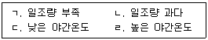
- ㄱ, ㄷ
- ㄱ, ㄹ
- ㄴ, ㄷ
- ㄴ, ㄹ
(정답률: 30%)
35. 해충의 피해에 관한 설명으로 옳지 않은 것은?
- 총채벌레는 즙액을 빨아먹는다.
- 진딧물은 바이러스를 옮긴다.
- 온실가루이는 배설물로 그을음병을 유발한다.
- 가루깍지벌레는 뿌리를 가해한다.
(정답률: 19%)
36. 화훼작물의 양액재배 시 양액조성을 위해 고려해야 할 사항이 아닌 것은?
- 전기전도도(EC)
- 이산화탄소 농도
- 산도(pH)
- 용존산소 농도
(정답률: 알수없음)
37. 화훼작물의 저온 춘화에 관한 설명으로 옳지 않은 것은?
- 저온에 의해 화아분화와 개화가 촉진되는 현상이다.
- 종자 춘화형은 일정기간 동안 생육한 후부터 저온에 감응한다.
- 녹색 식물체 춘화형에는 꽃양배추, 구근류 등이 있다.
- 탈춘화는 춘화처리의 자극이 고온으로 인해 소멸되는 현상을 말한다.
(정답률: 19%)
38. 분화류의 신장을 억제하여 콤팩트한 모양으로 상품성을 향상시킬 수 있는 생장조절제는?
- 2,4-D
- IBA
- IAA
- B-9
(정답률: 알수없음)
39. 다음이 설명하는 재배법은?
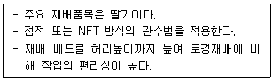
- 매트재배
- 네트재배
- 아칭재배
- 고설재배
(정답률: 37%)
40. 부(-)의 DIF에서 초장 생장의 억제효과가 가장 큰 원예작물은?
- 튤립
- 국화
- 수선화
- 히야신스
(정답률: 40%)
41. 조직배양을 통한 무병주 생산이 산업화된 원예작물을 모두 고른 것은?
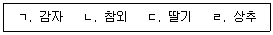
- ㄱ, ㄴ
- ㄱ, ㄷ
- ㄴ, ㄷ
- ㄷ, ㄹ
(정답률: 28%)
42. 다음이 설명하는 병은?
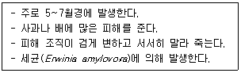
- 궤양병
- 흑성병
- 화상병
- 축과병
(정답률: 알수없음)
43. 그 해 자란 새가지에 과실이 달리는 과수는?
- 사과
- 배
- 포도
- 복숭아
(정답률: 55%)
44. 과수별 실생대목의 연결이 옳지 않은 것은?
- 사과 – 야광나무
- 배 – 아그배나무
- 감 – 고욤나무
- 감귤 - 탱자나무
(정답률: 10%)
45. 꽃받기가 발달하여 과육이 되고 씨방은 과심이 되는 과실은?
- 사과
- 복숭아
- 포도
- 단감
(정답률: 37%)
46. 과수에서 꽃눈분화나 과실발육을 촉진시킬 목적으로 실시하는 작업이 아닌 것은?
- 하기전정
- 환상박피
- 순지르기
- 강전정
(정답률: 31%)
47. 과수원 토양의 입단화 촉진 효과가 있는 재배방법이 아닌 것은?
- 석회 시비
- 유기물 시비
- 반사필름 피복
- 녹비작물 재배
(정답률: 30%)
48. 과수 재배 시 늦서리 피해 경감 대책에 관한 설명으로 옳지 않은 것은?
- 상로(霜路)가 되는 경사면 재배를 피한다.
- 산으로 둘러싸인 분지에서 재배한다.
- 스프링클러를 이용하여 수상 살수를 실시한다.
- 송풍법으로 과수원 공기를 순환시켜 준다.
(정답률: 37%)
49. 엽록소의 구성성분으로 부족할 경우 잎의 황백화 원인이 되는 필수원소는?
- 철
- 칼슘
- 붕소
- 마그네슘
(정답률: 30%)
50. 경사지 과수원과 비교하였을 때 평탄지 과수원의 장점이 아닌 것은?
- 배수가 양호하다.
- 토양 침식이 적다.
- 기계작업이 편리하다.
- 토지 이용률이 높다.
(정답률: 20%)
3과목: 수확 후 품질관리론
51. 원예산물의 수확적기를 판정하는 방법으로 옳은 것은?
- 후지 사과 - 요오드반응으로 과육의 착색면적이 최대일 때 수확한다.
- 저장용 마늘 - 추대가 되기 전에 수확한다.
- 신고 배 - 만개 후 90일 정도에 과피가 녹황색이 되면 수확한다.
- 가지 - 종자가 급속히 발달하기 직전인 열매의 비대최성기에 수확한다.
(정답률: 10%)
52. 사과(후지)의 성숙 시 관련하는 주요 색소를 선택하고 그 변화로 옳은 것은?
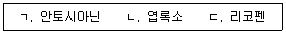
- ㄱ: 증가, ㄴ: 감소
- ㄱ: 감소, ㄴ: 증가
- ㄱ: 감소, ㄴ: 감소, ㄷ: 증가
- ㄱ: 증가, ㄴ: 증가, ㄷ: 감소
(정답률: 알수없음)
53. 호흡급등형 원예산물을 모두 고른 것은?
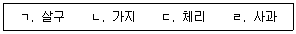
- ㄱ, ㄴ
- ㄱ, ㄹ
- ㄴ, ㄷ
- ㄷ, ㄹ
(정답률: 28%)
54. 포도의 성숙 과정에서 일어나는 현상으로 옳지 않은 것은?
- 전분이 당으로 전환된다.
- 엽록소의 함량이 감소한다.
- 펙틴질이 분해된다.
- 유기산이 증가한다.
(정답률: 10%)
55. 오이에서 생성되는 쓴맛을 내는 수용성 알칼로이드 물질은?
- 아플라톡신
- 솔라닌
- 쿠쿠르비타신
- 아미그달린
(정답률: 34%)
56. 원예산물에서 에틸렌의 생합성 과정에 필요한 물질이 아닌 것은?
- ACC합성효소
- SAM합성효소
- ACC산화효소
- PLD분해효소
(정답률: 알수없음)
57. 원예작물의 수확 후 증산작용에 관한 설명으로 옳은 것은?
- 증산율이 낮은 작물일수록 저장성이 약하다.
- 공기 중의 상대습도가 높아질수록 증산이 활발해져 생체중량이 감소된다.
- 증산은 대기압에 정비례하므로 압력이 높을수록 증가한다.
- 원예산물로부터 수분이 수증기 형태로 대기중으로 이동하는 현상이다.
(정답률: 39%)
58. 과실별 주요 유기산의 연결로 옳지 않은 것은?
- 포도 – 주석산
- 감귤 – 구연산
- 사과 – 말산
- 자두 - 옥살산
(정답률: 20%)
59. 원예산물의 조직감과 관련성이 높은 품질구성 요소는?
- 산도
- 색도
- 수분함량
- 향기
(정답률: 40%)
60. 굴절당도계에 관한 설명으로 옳은 것은?
- 당도는 측정시 과실의 온도에 영향을 받지 않는다.
- 영점을 보정할 때 증류수를 사용한다.
- 당도는 과실내의 불용성 펙틴의 함량을 기준으로 한다.
- 표준당도는 설탕물 10 % 용액의 당도를 1 % (°Brix)로 한다.
(정답률: 알수없음)
61. 원예산물에서 카로티노이드 계통의 색소가 아닌 것은?
- α-카로틴
- 루테인
- 케라시아닌
- β-카로틴
(정답률: 10%)
62. 수확 후 감자의 슈베린 축적을 유도하여 수분손실을 줄이고 미생물 침입을 예방하는 전처리는?
- 예냉
- 예건
- 치유
- 예조
(정답률: 알수없음)
63. 원예산물의 세척 방법으로 옳은 것을 모두 고른 것은?
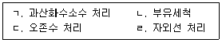
- ㄱ, ㄹ
- ㄱ, ㄴ, ㄷ
- ㄴ, ㄷ, ㄹ
- ㄱ, ㄴ, ㄷ, ㄹ
(정답률: 10%)
64. 장미의 절화수명 연장을 위해 보존액의 pH를 산성으로 유도하는 물질은?
- 제1인산칼륨, 시트르산
- 카프릴산, 제2인산칼륨
- 시트르산, 수산화나트륨
- 탄산칼륨, 카프릴산
(정답률: 알수없음)
65. 다음 ( )에 알맞은 용어는?
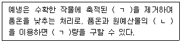
- ㄱ: 호흡열, ㄴ: 대류열
- ㄱ: 포장열, ㄴ: 비열
- ㄱ: 냉장열, ㄴ: 복사열
- ㄱ: 포장열, ㄴ: 장비열
(정답률: 알수없음)
66. 수확 후 후숙처리에 의해 상품성이 향상되는 원예산물은?
- 체리
- 포도
- 사과
- 바나나
(정답률: 알수없음)
67. 원예산물의 저장 효율을 높이기 위한 방법으로 옳지 않은 것은?
- 저장고 내부를 차아염소산나트륨 수용액을 이용하여 소독한다.
- CA저장고에는 냉각장치, 압력조절장치, 질소발생기를 설치한다.
- 저장고 내의 고습을 유지하기 위해 활성탄을 사용한다.
- 저장고 내의 온도는 저장중인 원예산물의 품온을 기준으로 조절한다.
(정답률: 40%)
68. 원예산물의 MA필름저장에 관한 설명으로 옳지 않은 것은?
- 인위적 공기조성 효과를 낼 수 있다.
- 방담필름은 포장 내부의 응결현상을 억제한다.
- 필름의 이산화탄소 투과도는 산소 투과도 보다 낮아야 한다.
- 필름은 인장강도가 높은 것이 좋다.
(정답률: 20%)
69. 원예산물의 숙성을 억제하기 위한 방법을 모두 고른 것은?
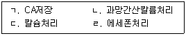
- ㄱ, ㄴ, ㄷ
- ㄱ, ㄴ, ㄹ
- ㄱ, ㄷ, ㄹ
- ㄴ, ㄷ, ㄹ
(정답률: 10%)
70. 농민 H씨가 다음과 같은 배를 동일 조건에서 상온저장 할 경우 저장성이 가장 낮은 것은?
- 신고
- 신수
- 추황배
- 영산배
(정답률: 알수없음)
71. 원예산물을 저온저장 시 발생하는 냉해(chilling injury)의 증상이 아닌 것은?
- 표피의 함몰
- 수침현상
- 세포의 결빙
- 섬유질화
(정답률: 20%)
72. 다음 중 3~7℃에서 저장할 경우 저온장해가 일어날 수 있는 원예산물은?
- 토마토
- 단감
- 사과
- 배
(정답률: 50%)
73. 원예산물의 적재 및 유통에 관한 설명으로 옳지 않은 것은?
- 신선채소류에는 수분흡수율이 높은 포장상자를 사용한다.
- 압상을 방지할 수 있는 강도의 골판지상자로 포장해야 한다.
- 기계적 장해를 회피하기 위해 포장박스 내 적재물량을 조절한다.
- 골판지 상자의 적재방법에 따라 상자에 가해지는 압축강도는 달라진다.
(정답률: 10%)
74. 동일조건에서 이산화탄소 투과도가 가장 낮은 포장재는?
- 폴리프로필렌(PP)
- 저밀도 폴리에틸렌(LDPE)
- 폴리스티렌(PS)
- 폴리에스테르(PET)
(정답률: 40%)
75. 다음이 설명하는 원예산물관리제도는?
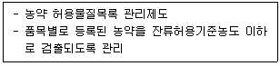
- HACCP
- PLS
- GAP
- APC
(정답률: 40%)
4과목: 농산물유통론
76. 농산물의 특성으로 옳지 않은 것은?
- 계절성ㆍ부패성
- 탄력적 수요와 공급
- 공산품 대비 표준화ㆍ등급화 어려움
- 가격 대비 큰 부피와 중량으로 보관ㆍ운반 시 고비용
(정답률: 30%)
77. 농산물의 생산과 소비 간의 간격해소를 위한 유통의 기능으로 옳지 않은 것은?
- 시간 간격해소 – 수집
- 수량 간격해소 – 소분
- 장소 간격해소 – 수송ㆍ분산
- 품질 간격해소 - 선별ㆍ등급화
(정답률: 37%)
78. 최근 식품 소비트렌드로 옳지 않은 것은?
- 소비품목 다변화
- 친환경식품 증가
- 간편가정식(HMR) 증가
- 편의점 도시락 판매량 감소
(정답률: 알수없음)
79. 농산물 유통정보의 종류에 관한 설명으로 옳은 것은?
- 관측정보 - 농업의 경제적 측면 예측자료
- 정보종류 - 거래정보, 관측정보, 전망정보
- 거래정보 - 산지 단계를 제외한 조사실행
- 전망정보 - 개별재배면적, 생산량, 수출입통계
(정답률: 알수없음)
80. 농산물 유통기구의 종류와 역할에 관한 설명으로 옳지 않은 것은?
- 크게 수집기구, 중개기구, 조성기구로 구성된다.
- 중개기구는 주로 도매시장이 역할을 담당한다.
- 수집기구는 산지의 생산물 구매역할을 담당한다.
- 생산물이 생산자부터 소비자까지 도달하는 과정에 있는 모든 조직을 의미한다.
(정답률: 28%)
81. 농산물 도매시장에 관한 설명으로 옳지 않은 것은?
- 경매를 통해 가격을 결정한다.
- 농산물 가격에 관한 정보는 제공하지 않는다.
- 최근 직거래 등으로 거래비중이 감소되고 있다.
- 도매시장법인, 중도매인, 매매참가인 등이 활동한다.
(정답률: 46%)
82. 생산자는 산지 수집상에게 배추 1천 포기를 100만원에 판매하고 수집상은 포기당 유통비용 200원, 유통이윤 800원을 더해 도매상에게 판매했다. 수집상의 유통마진율(%)은?
- 30
- 40
- 50
- 60
(정답률: 알수없음)
83. 협동조합 유통에 관한 설명으로 옳은 것을 모두 고른 것은?
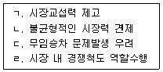
- ㄱ, ㄷ
- ㄴ, ㄹ
- ㄱ, ㄴ, ㄹ
- ㄱ, ㄴ, ㄷ, ㄹ
(정답률: 알수없음)
84. 공동판매의 장점이 아닌 것은?
- 신속한 개별정산
- 유통비용의 절감
- 효율적인 수급조절
- 생산자의 소득안정
(정답률: 50%)
85. 소매상의 기능으로 옳은 것을 모두 고른 것은?
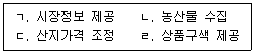
- ㄱ, ㄷ
- ㄱ, ㄹ
- ㄱ, ㄴ, ㄹ
- ㄴ, ㄷ, ㄹ
(정답률: 20%)
86. 농산물 산지유통의 기능으로 옳은 것을 모두 고른 것은?
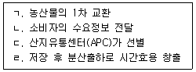
- ㄱ, ㄷ
- ㄴ, ㄹ
- ㄱ, ㄷ, ㄹ
- ㄴ, ㄷ, ㄹ
(정답률: 46%)
87. 농산물의 물적유통기능으로 옳지 않은 것은?
- 자동차 운송은 접근성에 유리
- 상품의 물리적 변화 및 이동 관련 기능
- 수송기능은 생산과 소비의 시간격차 해결
- 가공, 포장, 저장, 수송, 상하역 등이 해당
(정답률: 알수없음)
88. 농산물 무점포 전자상거래의 장점이 아닌 것은?
- 고객정보 획득용이
- 오프라인 대비 저비용
- 낮은 시간ㆍ공간의 제약
- 해킹 등 보안사고에 안전
(정답률: 40%)
89. 농산물의 등급화에 관한 설명으로 옳은 것은?
- 상ㆍ중ㆍ하로 등급 구분
- 품위 및 운반ㆍ저장성 향상
- 등급에 따른 가격차이 결정
- 규모의 경제에 따른 가격 저렴화
(정답률: 50%)
90. 농산물 수요의 가격탄력성에 관한 설명으로 옳은 것은?
- 고급품은 일반품 수요의 가격탄력성 보다 작다.
- 수요가 탄력적인 경우 가격인하 시 총수익은 증가한다.
- 수요의 가격탄력적 또는 비탄력적 여부는 출하량 조정과는 무관하다.
- 수요의 가격탄력성은 품목마다 다르며, 가격하락 시 수요량은 감소한다.
(정답률: 28%)
91. 소비자의 특성으로 옳지 않은 것은?
- 단일 차원적
- 목적의식 보유
- 선택대안의 비교구매
- 주권보유 및 행복추구
(정답률: 30%)
92. 시장세분화 전략에서의 행위적 특성은?
- 소득
- 인구밀도
- 개성(personality)
- 브랜드충성도(loyalty)
(정답률: 30%)
93. 농산물 브랜드의 기능이 아닌 것은?
- 광고
- 수급조절
- 재산보호
- 품질보증
(정답률: 알수없음)
94. 계란, 배추 등 필수 먹거리들을 미끼상품으로 제공하여 구매를 유도하는 가격전략은?
- 리더가격
- 단수가격
- 관습가격
- 개수가격
(정답률: 37%)
95. 경품, 사은품, 쿠폰 등을 제공하는 판매촉진의 효과가 아닌 것은?
- 상품홍보
- 잠재고객 확보
- 단기적 매출증가
- 타 업체의 모방 곤란
(정답률: 42%)
96. 농산물의 유통조성기능이 아닌 것은?
- 정보제공
- 소유권 이전
- 표준화ㆍ등급화
- 유통금융ㆍ위험부담
(정답률: 30%)
97. 생산부터 판매까지 유통경로의 모든 프로세스를 통합하여 소비자의 가치를 창출하고 기업의 경쟁력을 판단하는 시스템은?
- POS(Point Of Sales)
- CS(Customer Satisfaction)
- SCM(Supply Chain Management)
- ERP(Enterprise Resource Planning)
(정답률: 30%)
98. 농산물 가격변동의 위험회피 대책이 아닌 것은?
- 계약생산
- 분산판매
- 재해대비
- 선도거래
(정답률: 34%)
99. 단위화물적재시스템의 설명으로 옳지 않은 것은?
- 운송수단 이용 효율성 제고
- 시스템화로 하역ㆍ수송의 일관화
- 파렛트, 컨테이너 등을 이용한 단위화
- 국내표준 파렛트 T11형 규격은 1000mm×1000mm
(정답률: 46%)
100. 농산물 유통시장의 거시환경으로 옳은 것을 모두 고른 것은?
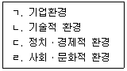
- ㄱ, ㄴ
- ㄷ, ㄹ
- ㄱ, ㄷ, ㄹ
- ㄴ, ㄷ, ㄹ
(정답률: 알수없음)
지리적 표시란, 특정 지역에서 생산되거나 가공된 농수산물에 대해 그 지역명을 명시하는 것을 말합니다. 이는 해당 지역의 특정한 기후, 토양, 수질 등의 조건이 농산물의 품질에 영향을 미치기 때문에, 소비자들은 해당 지역에서 생산된 농수산물의 품질이 높다는 인식을 가지고 구매하게 됩니다.
발음은 지리적 표시와는 관련이 없는 용어이므로, 정답이 될 수 없습니다. 유래는 지리적 표시의 기원과 관련된 용어이므로, 정답이 될 수 있습니다. 명성은 해당 지역에서 생산된 농수산물이 얼마나 유명하고 평판이 좋은지를 나타내는 용어이므로, 정답이 될 수 없습니다. 품질은 농수산물의 품질을 나타내는 용어이므로, 지리적 표시와 관련이 있지만 정답이 될 수 없습니다.